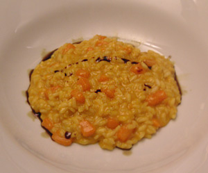

Risotto con Zucca e Gorgonzola (Kürbisrisotto mit Gorgonzola)
5 von 6300 g Hokkaido-Kürbis schälen und würfeln. Mit einer Scharlotte in Olivenöl sowie etwas Butter andämpfen. 300 g Risottoreis dazugeben und glasig dünsten danach mit Weisswein ablöschen. Nach und nach selbstgemachte Bouillon beigeben bis der Risotto gar ist. 50 g Gorgonzola darunterziehen, mit Kürbiskernöl beträufeln und serviern.
